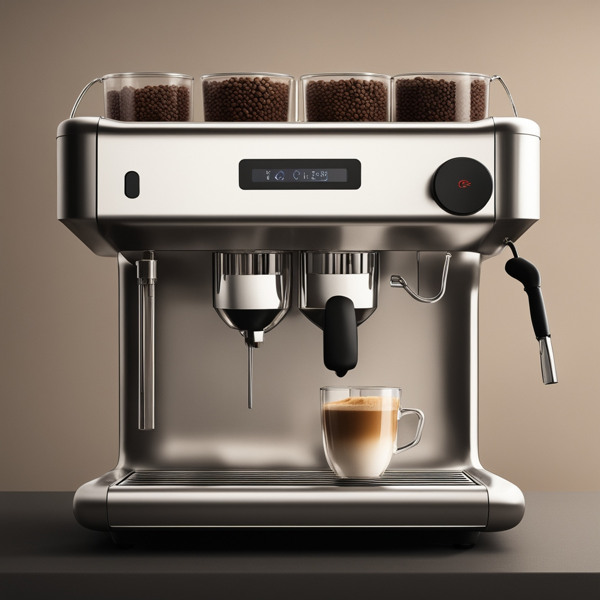
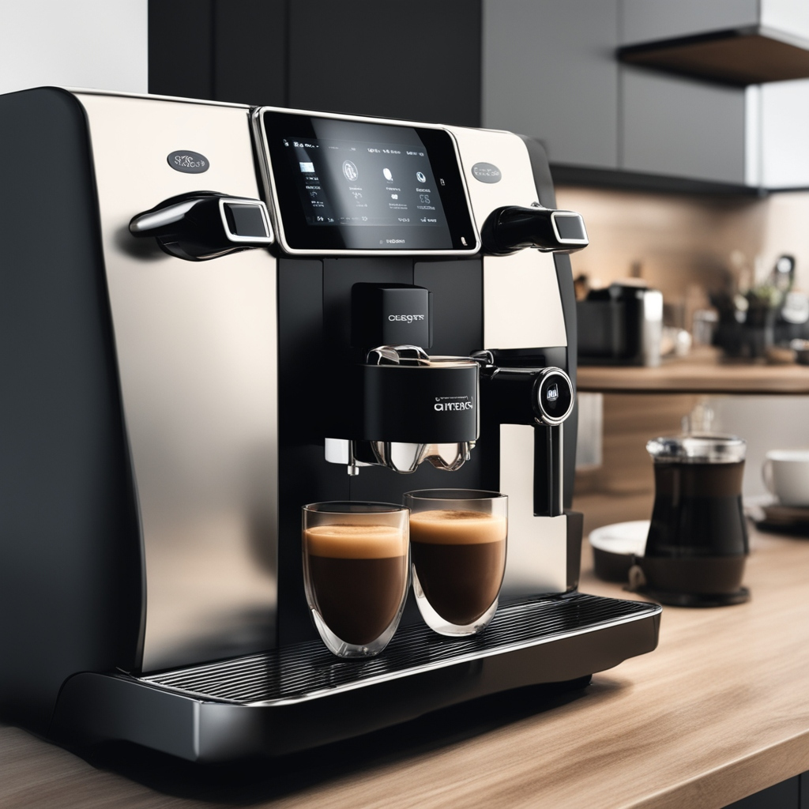
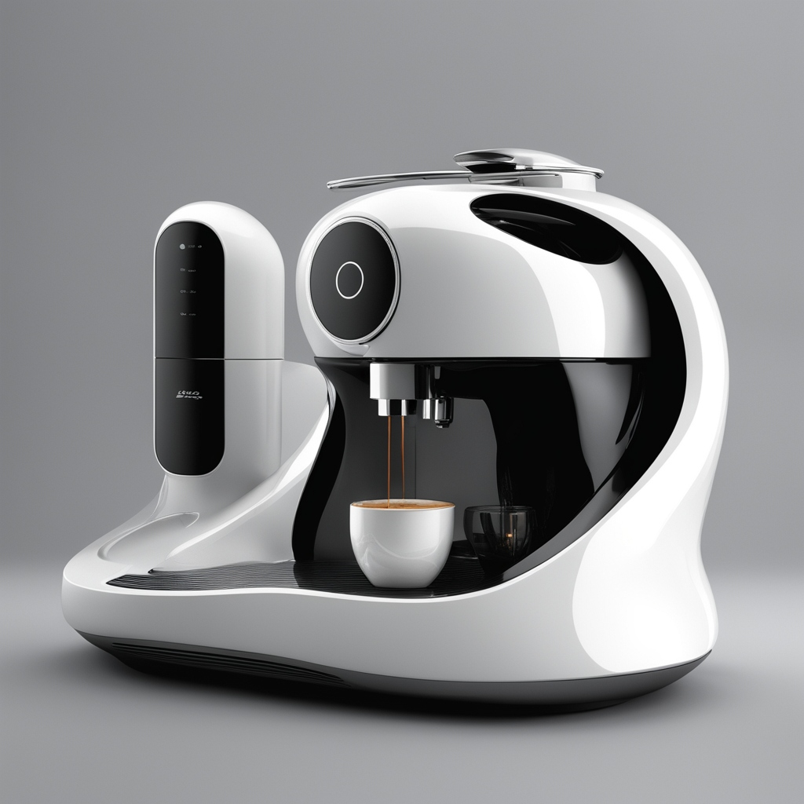
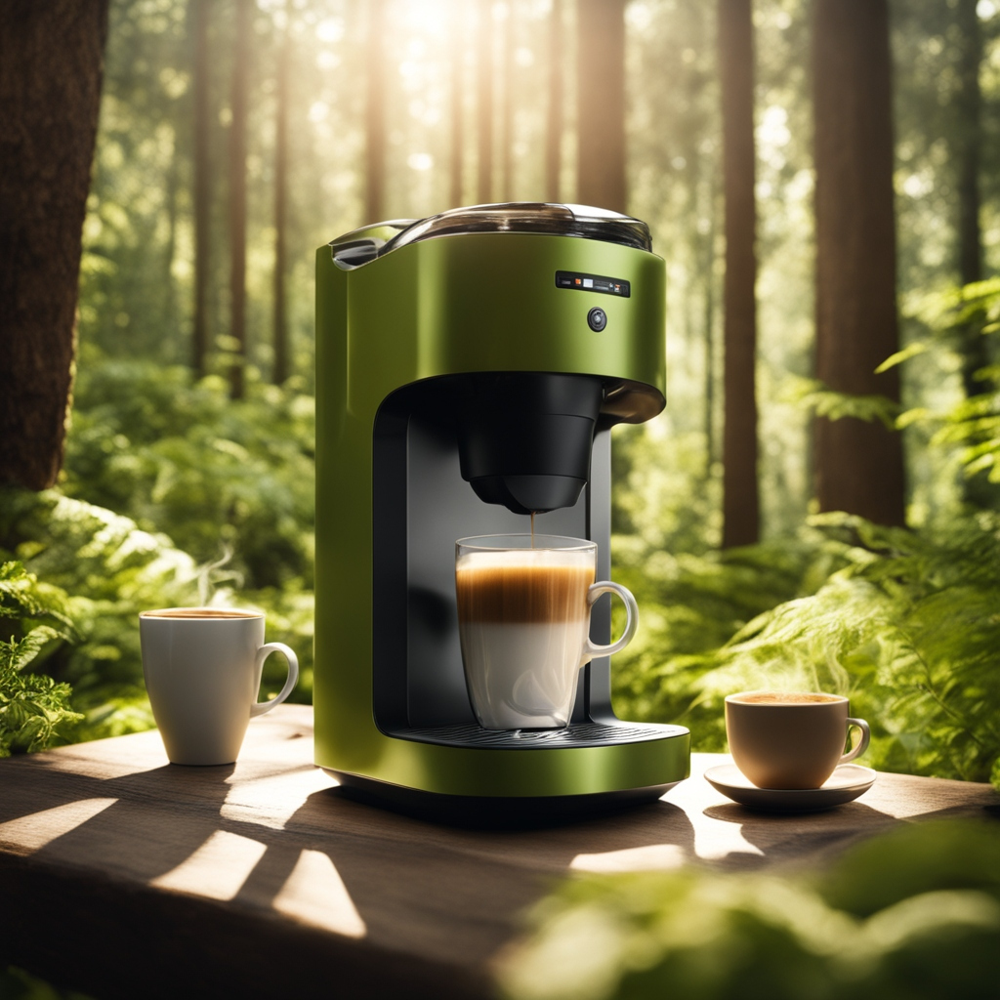

Product of the Week
CafePro 2000X Elite Series
The "CafePro 2000X Elite Series" has secured the highest weekly sales due to its exceptional blend of cutting-edge technology, user-friendly design and competitive price point. Offering a premium coffee experience at an affordable cost, it caters to a wide range of consumers seeking both quality and value. Additionally, the machine's energy-efficient design and commitment to sustainability resonate with environmentally conscious consumers, solidifying its position as the go-to coffee maker for those who prioritize both excellence and eco-friendliness.
Reasons to Buy from Pour Flow
-
Premium Coffee Experience
Our coffee machine promises a premium experience with precision brewing, utilizing advanced temperature control for optimal flavor extraction and customizable grind settings. The incorporation of a high-pressure pump ensures a rich crema, delivering a barista-quality cup tailored to individual preferences.
-
Durable and Stylish Design
Crafted with high-quality materials, our coffee machine boasts a durable build that stands the test of time. Its sleek and stylish design not only enhances your space with elegance but also ensures a reliable and aesthetically pleasing addition to your kitchen, combining durability with a modern touch.
-
Energy-Efficient and Eco-Friendly
Embrace sustainability effortlessly with our coffee machine, designed to be energy-efficient through features like automatic shut-off and energy-saving modes. Committed to eco-conscious practices, the use of recyclable materials aligns every sip with a greener lifestyle, making your coffee enjoyment a conscious choice for the planet.
-
User-Friendly Operation

Our coffee machine redefines simplicity with its user-friendly interface, allowing both coffee enthusiasts and beginners to navigate the brewing process effortlessly. Intuitive controls, easy-to-understand settings, and a hassle-free cleaning system ensure that everyone can enjoy the perfect cup without any complexity, making it a welcoming addition to any household.